The mystery of the Lapulapu Ridge is a very interesting subject. Indeed, our world is filled with all kinds of interesting things going on. Some can even possibly be considered an extraterrestrial riddle. Even if it is wholly terrestrial in nature. All we need to do is take a good look at what surrounds us. Because, if we look at things with open eyes, and with an open mind, we will see new things, and come to new understandings on our world, and what is just going on within it.
With the advent of new technology, we are able to peer into regions and places that used to be denied us. Today, using such technologies as Google Earth, we are able to peer into the shroud and explore all kinds of things that we didn’t even know existed. Some of it is amazing. Some of it is frightening. Some of what we see can be curious, while others can tell us just a little bit more about ourselves. All we need do is listen to what we find.
Today I would like to discuss a very odd thing that is going on at the Lapulapu Ridge.
For those of you who don’t know, the Lapulapu Ridge is an undersea formation that lies outside of Saipan. Saipan is a small group of islands in the Pacific Ocean. It is terribly isolated and remote. It’s also part of the United States. (I’ll bet that you all didn’t know that.) The point of interest here is not the abundance of coconuts on the Saipan island, or the history of the island during World War II. What is so interesting about this place is that someone, or something, has been busily mining that area for some time. Most certainly for years, probably for decades, and maybe even for a century or longer! What is so odd about this is that it is impossible to do so. At least, using known conventional technologies, that we humans possess.
Let’s have a look at this curious situation…
Introduction
"We still haven't explored the deep oceans or the inner crusts of Earth." -Dr. Wolf statement in regards to the extraterrestrial presence on the earth and their activities.
Let’s take a moment to look at what is going on in our planet. We humans like to believe that we are the “owners” of the planet, and that we are in full control and knowledge of “our” planet. We like to believe that we are at the top of the food chain. We like to believe that we are in full control of technology and have the power and dominion over this planet.
That is wrong. We have no power, we know very little, and we know “jack shit” about the history of this planet. In fact, we actually know very little of the planets past and whom actually “owns” the planet that we reside upon. Yet the evidence of the real “owners” of the planet are everywhere, we need just search for the evidence and study it with an open mind.
I would like to take a look at some such “object” or area of evidence. It can be considered a terrestrial or even an extraterrestrial mystery. I would like to look at the Lapulapu Ridge Mining efforts near and around Saipan. I refer to it as a “mining” effort only because the tracks suggest displacement of soil. The only reason for the displacement of soil that I am aware of is part of either mining or construction efforts. (Constructions that are suggestive of long linear lines are more akin to roads then they are for buildings.)
Therefore, let’s look at what is hidden deep under the ocean under the waves. Let’s look at evidence of large-scale (possibly) robotic automated mining operations under the surface of “our” oceans.
The Lapulapu Ridge Formations
The following are filtered images from Google Earth.
The filters remove the reflective waveform obfuscation layer characteristics of the oceans from the Google images. I want to give Google the benefit of doubt and attribute the reflective quality of the ocean surface to be a truly natural obfuscation.
However, once the images are filtered to remove this sort of waveform obfuscation layer a series of patterns emerge. This is truly puzzling, as one would expect to see resolved undersea details. You would expect natural features to parallel that of the native landmasses. Such things as mountains, rivers and other natural geologic structures would be expected to be shown, or more accurately, their undersea equivalents. But instead, one can clearly see enormous scaled undersea (apparent) surface mining evidence. Once removed, one can clearly see the presence of unusual tracks and movement.
There is absolutely no way that this can be considered to be natural geologic evidence at all.
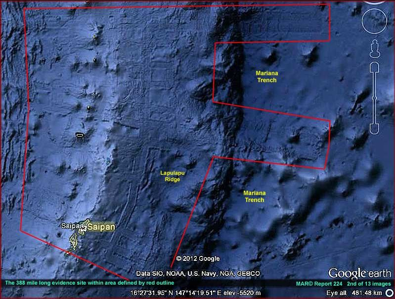
Undersea mining operations NE of Saipan. (Image Source.)
These features shown are near the Saipan islands. Of which the specific coordinates are 16°27’31.55”N 147°14’19.51”E. I provide just a mere handful of images to illustrate my point here. The reader is encouraged to pursue their own investigative activity to whatever conclusion it leads to.
These are NOT natural geologic formations. Nature does not follow straight lines unless they go through fissures or regions of internal stress. Nor do they make 90° bends, and 180° bends. Nor do they repeatedly follow parallel paths of operation. There is absolutely no way that these features are natural.
Non-Natural Features
I was never briefed on these features, nor was I introduced to them through any kind of program or manual. These constructions were discovered as a natural bout of investigative journalism. Indeed, it is characteristic of obtaining supportive documentation for my own contentions. All that one needs to do is look around themselves to the world about us. In so doing, one can see the hidden secrets that lie submerged and hidden.
I do not who or what formed these features.
They might, remotely, be naturally made. They could be constructed by some surreptitious government project of great secrecy and complexity. They could be all that remains of some great underwater public works project. I don’t know at all. But to me, these structures are clearly intelligent driven. They seem to suggest large-scale underwater mining efforts. That is the basis of my discussion here. That these apparent features are but part of large-scale construction made by a race with the capability to do so.
These features are not limited to the Saipan region, but exist in other undersea locations. For instance, they can be found at 47°47’46.16”S 107°15’00.93”E as well. Of course, the form and shape is different. But whom would expect large scale mining west of southern Tasmania?
If human, then we really need to take a good hard look at what our fabrication abilities are. Because if we can mine or perform these kinds of undersea activities, then we can most certainly create a facility on another planet. If these formations are not human, then we need to reconsider who is making them and why. Remember, boys and girls, extraterrestrial activity, of huge extent, can be found throughout our solar system. We only need look below the surface and take a hard look at what is presented to us.
Statists say these features are just normal
After the initial discovery by a poorly named group known as “SecureTeam10”, the scientific statists came out with their pronouncements and statements.
“Large parallel lines = tectonic fissures, naturally occurring sorry. The curvy line is likely the pathway of a underwater current and deposition field of said current.” - YouTube Mikitan Fox
Now of course, the Scientific Statists have to crawl out from under a rock and “explain” to us that all of this is of no concern. They hurriedly hopped up upon their great white horses and began to beat the drums loudly. They shout, “This is just an ordinary fault line. Anything else is incorrect. Everything else is nonsense.”
My definition of scientific statism;
A concentration of a set scientific theory in the hands of a closed elite group of people. Often they have direct ties to a highly centralized government. To alter or change that theory to revise it to meet new discoveries or data often requires government derived politics and peer-group approvals.
Tectonic Fissures
Well, it’s just like those pesky statists to make a pronouncement and run away to hide in their mother’s basement.
The fracture mechanics model of the tectonic fissures do not permit the kinds of fractures and behaviors that are clearly observed in this instance. I suggest anyone interested in the formation of faults and their behaviors read “Formation and Development of Fissures at the East Pacific Rise: Implications for Faulting and Magmatism at Mid-Ocean Ridges“. It can be read on line at Department of Geosciences, Oregon State University, Corvallis, OR 97331 USA.
By understanding the fracture mechanics involved in geothermal processes (especially those in the Pacific rim) one can clearly see that these “tracks” are absolutely not tectonic fissures. Tectonic fissures? What a laugh! Compare these images with the fault lines found in California here.
From the paper;
"The Griffith theory assumes that crack initiation occurs from the points of highest tensile stress on the surfaces of these microscopic flaws or "Griffith's cracks" in brittle material (in a biaxial stress field), and this has since been elucidated by the theoretical and laboratory studies of Bieniawski [1967] and Huang et al. [1993]. Joints, lava flow contacts, and tension cracks may be regarded as the macroscopic analogy to "Griffith's cracks" [Gudmundsson and Bäckström, 1991]."
Our understanding of crack formulation in brittle and ductile materials is quite mature. In fact it is one of the most common mechanical and civil engineering undergraduate courses that engineering students take. Oh, I surely remember the days during my classes in the”Mechanics of Deformable Bodies” class. LOL. In the case of the formation of cracks in the Pacific rim, it is obvious that the formation is absolutely straight forward for compressive fissure formulation.
Now, stress lines and their associated fractures for geologic features in the Pacific Rim are influenced by the elastic moduli, tensile stress and tensile strength of the host rock. As such, we know that hosted stresses, are in turn, a function of the grain structure of the materials.
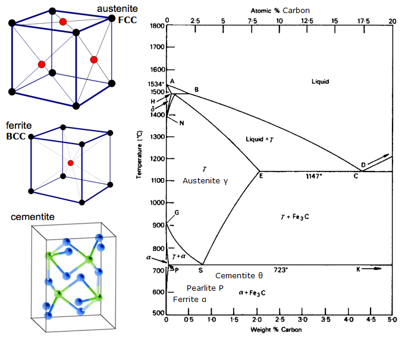
I well remember the days as a young engineering student. We studied the material properties of various materials and how the grain and lattice structures influenced the lines of stress inherent in them. One day we went to the lab and we observed the clean and cut fractures of sample steels.
The professor took numerous samples of SAE 1045 and SAE 1018 and placed them in a machine that pulled them apart. The deformation of the parts were at a nice clean 45 degree angle. This was quite along the lines of the crystal grain structure of the materials themselves. No matter what material, and no matter how fast or how slow, the fracture was always identical. It ALWAYS followed the lines of stress inherent inside the material.
We can see this everywhere. We can see this on the earth, and we can see this on other planets such as the moons of Jupiter. Here is a NASA slide showing the tectonic stress lines on Europia.
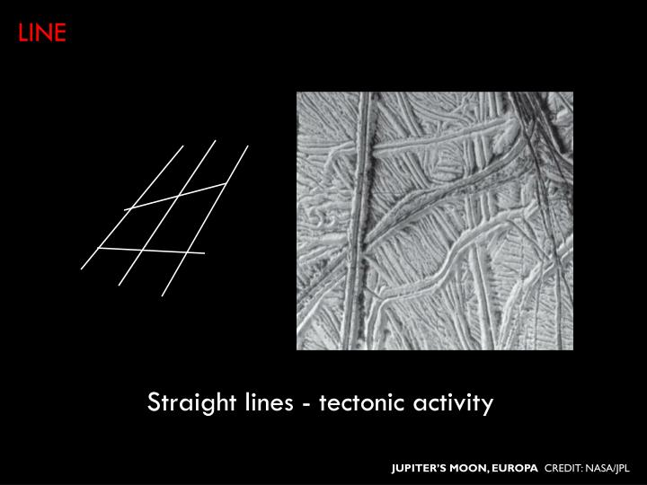
Fractures form along the principle lines of stress inherent in the material grain composition of the materials that make up the undersea mountain ranges of the Pacific Rim. This, in turn, is a function of the grain structure of the surrounding rocks. Thus the reason for straight lines,and precise angles of exact (and repeatable) angular measurement.
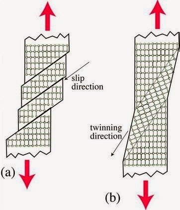
However, while many of the track lines observed in and around the undersea formation known as the Lapulapu ridge are straight, they do NOT follow material stress lines. Just having straight lines, and angular fractures alone does not qualify an observation to be that of a tectonic stress line. As NOWHERE in the world do tectonic lines of stress manifest as 90 degree bends, followed by another 90 degree bend. No do they manifest as pure radii that rounds a straight 90 degree bend at tangential points. These are clear VIOLATIONS of the laws of deformable bodies.
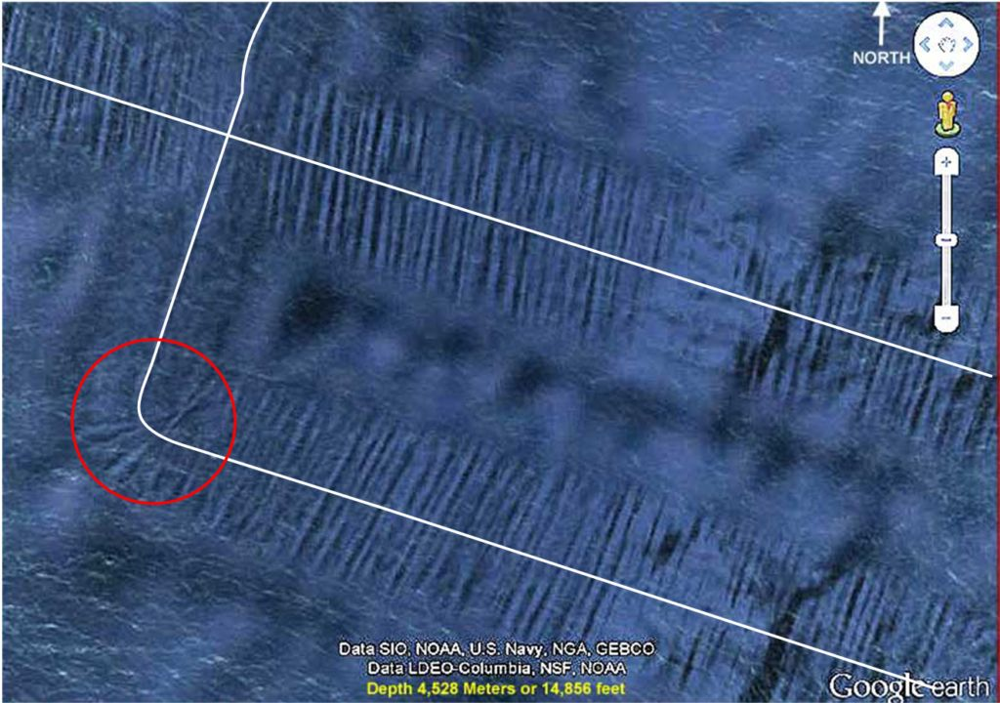
Ha, that pretty much rules out the kinds of behaviors observed in these tracks now doesn’t it?
About the Environment
These features and the corresponding events are taking place at a mind-boggling depth. At that depth the water is pitch black and the pressure is devastating. At the depth of 11,300 feet the water pressure would be a crushing 5000 psi.
To put this into perspective, most unclassified information place “safe” submarine depths at under 800 feet. We do know that submarines can dive deeper. However there is a difference between maximum dive depth and crush depth. World War II German U-boats generally had collapse depths in the range of 200 to 280 meters (660 to 920 feet). While modern nuclear attack submarines like the American Seawolf class are estimated to have a test depth of 490 m (1,600 ft.), which would imply a collapse depth of 730 m (2,400 ft.).
The depth of these tracks are at twice that depth.
It is as if it was on the surface of another planet. For instance, the crushing atmosphere of Venus is at 93 bar or around 1350 psi. Good golly, this is four times that!
Anyone or anything that can manufacture such a structure and place it where it is, can do so in just about any rocky planet in our solar system. (Of course, gas giants are another animal all together, so let’s not consider them.) The technology to make such a device is far advanced, and beyond anything that we humans can construct.
Track Behaviors
One of the first things that you can note from these images is the paths or trails that are constructed. The tracks go up entire sides of undersea mountains.. When the mountain is steep, the device that creates these tracks continues to try to go upwards, even if the vehicle slides down the hill sideways. It tries to jockey up the side.
The trails indicate complete U-turns that make a 180-degree turn, and then follows alongside the initial path or track.
The trails indicate intelligent decision. Ninety-degree turns are made, seemingly at random points. Obviously there was some sort of decision tree and direction that was provided to the engine that creates these tracks.
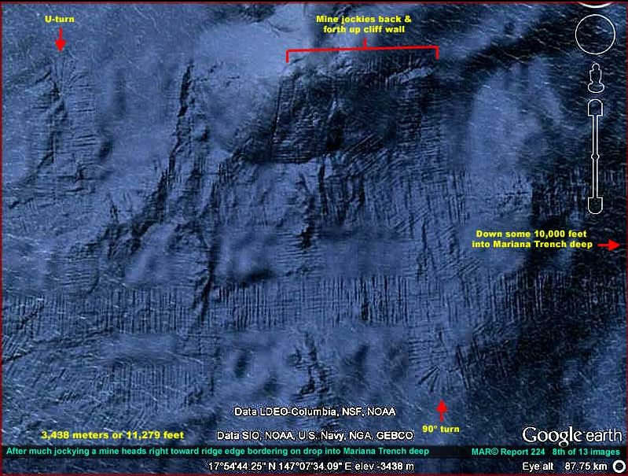
Southern end of the Saipan evidence site.(Image Source.)
Track Characteristics
The tracks are all the same. Aside from areas where they seem to go through mountains, the tracks are a uniform width. They create a line of debris that runs perpendicular to the track direction, and that line of debris is uniform with other lines with it. In the center of the track are a set of “inner tracks” that follow the main track line.
Goes Through Mountains
Apparently it, whatever it is, has the ability to go through mountains. This is very interesting.
Does it actually go through the mountain, or does it dematerialize before it, and rematerialize after it? It seems that it actually went through the mountain and the tunnel has since collapsed leaving a shallows and separation of one island into two.
Note that the tracks are also different. The tracks start to narrow down like an arrow. This is suggestive of a process that is unknown to us.
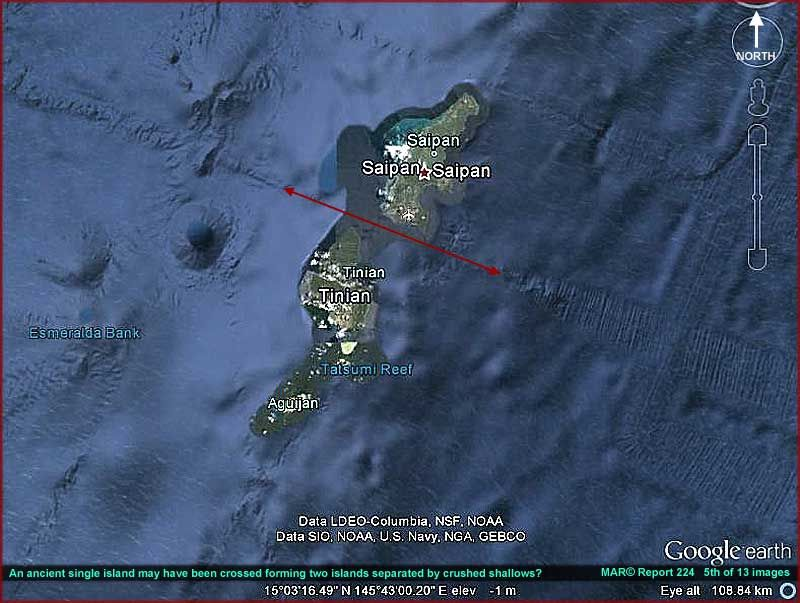
Going through mountains and islands. (Image Source.)
Intelligent Control
It is obvious that there is some degree of intelligent control over the vehicle or thing that creates these tracks. It makes 45-degree turns, 90-degree turns, and 180 degree U-turns. It is as if it is searching for something.
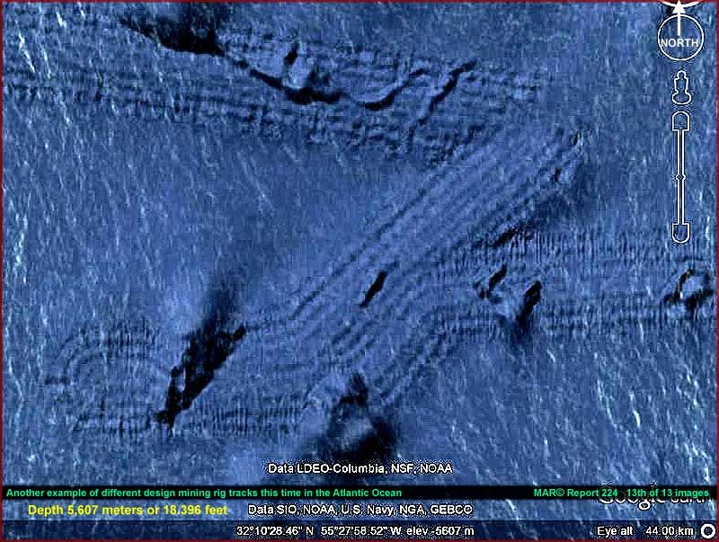
Intelligent Control over the undersea vehicle. (Image Source.)
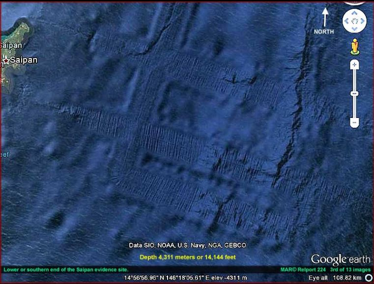
Evidence of exact 90° turns. (Image Source.)
Large Scale Formations and Paths
The device operates over enormous regions. Here is the overall general appearance of the most visible tracks around Saipan.
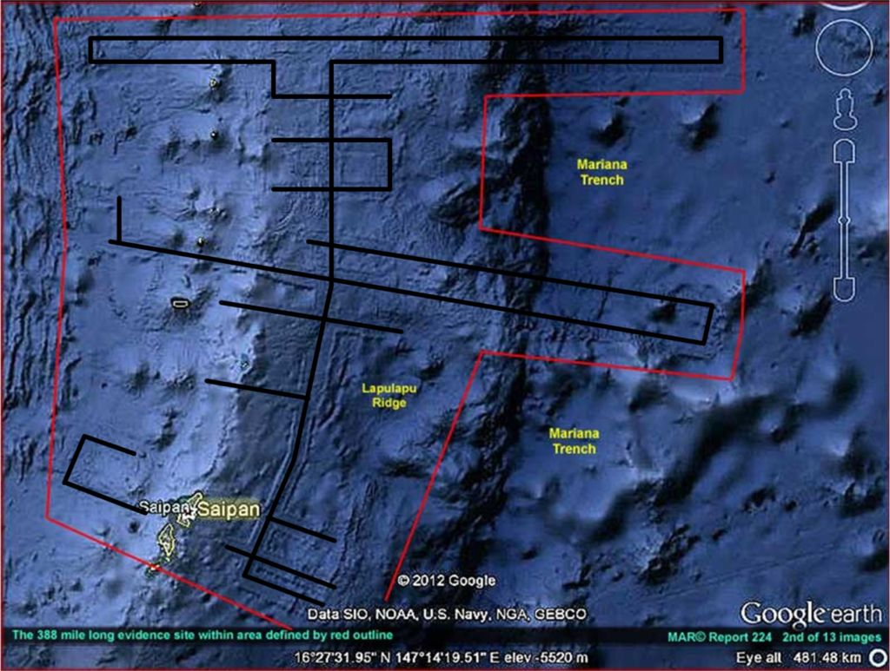
Obvious mining of the Lapulapu Ridge around Saipan.
Whomever or whatever is mining this area, they most certainly are focusing on the Lapulapu Ridge. The tracks clearly indicate an interest on the top of the ridge. While there are forays off the ridge, the tracks indicate an abrupt series of ninety-degree bends to return back to the ridge. I wonder what is so valuable on the ridge that requires such extensive mining at such a deep depth.
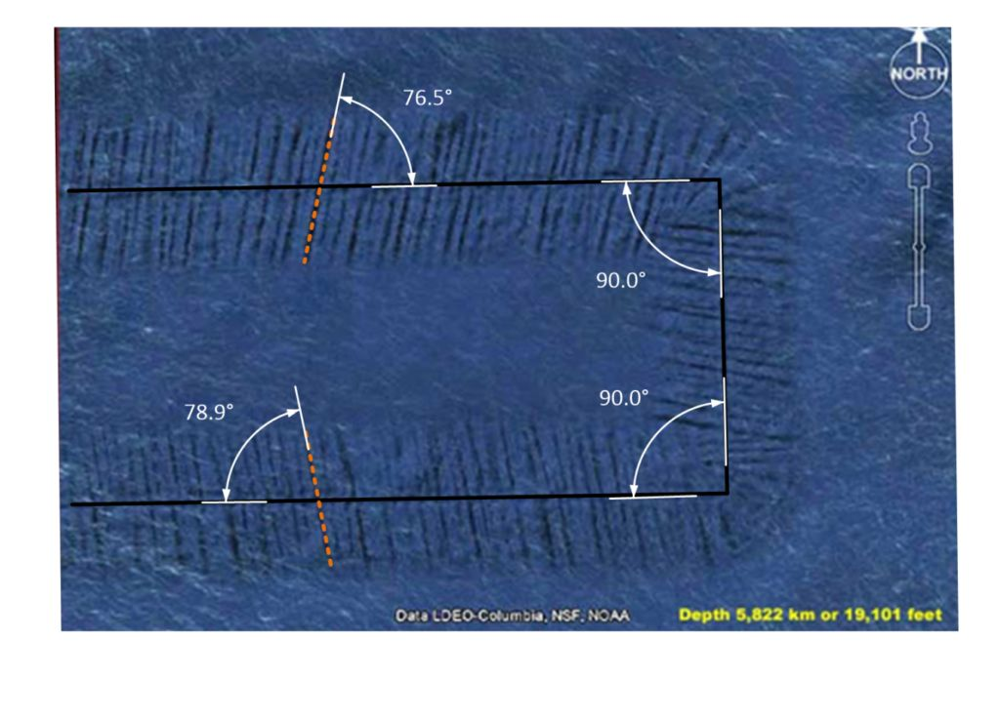
The angles associated with the large undersea tracks along the Lapulapu Ridge near the Saipan islands. They are certainly curious Large-scale formations. With accurate and exact 90 degree bends. The spent debris mounds are formed at a curious angle. The angles are similar but differ. The image above indicates a 76-degree and a 79-degree debris mound.
Evidence of Mining in a Grid-Like Formation
There is evidence that seems to point to the idea that the device operates following a grid or similar map.
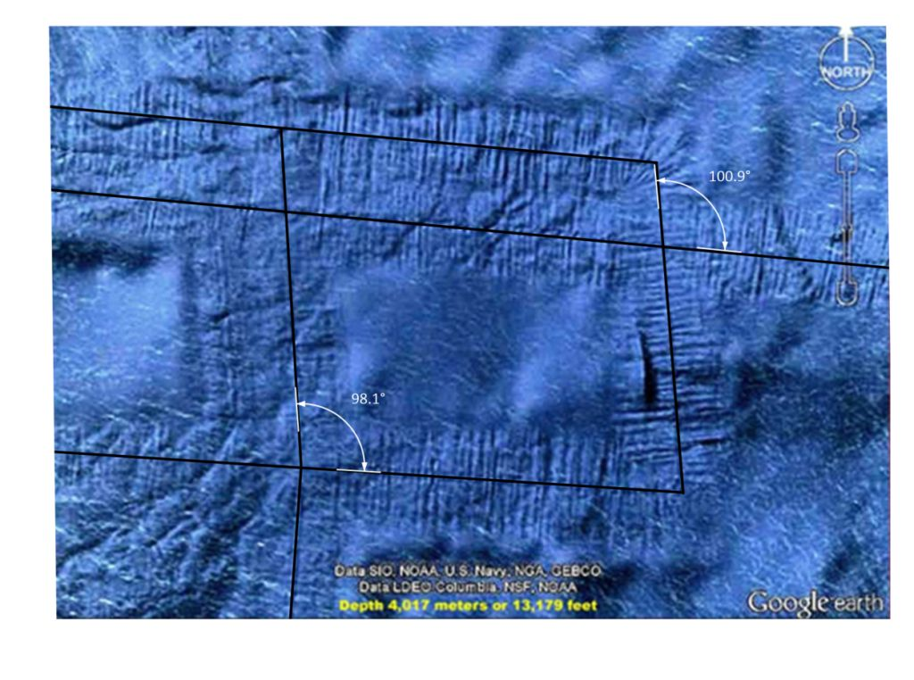
Rectangular features forming perfect squares. (Image Source.)
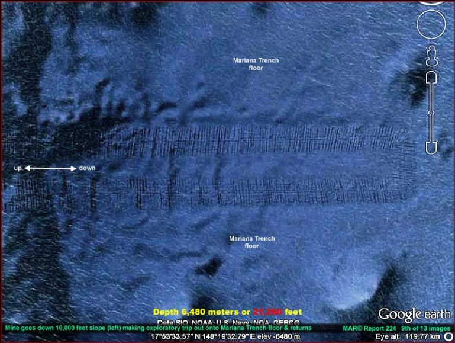
Large scale, large distance, grid-like mining.(Image Source.)
Possible vehicle
It’s pretty difficult to track down a vehicle actually making these tracks. However, if you are careful you can find one. I like to call it the roving orb under the ocean.
A large object has been observed crawling along the undersea surface at a depth of over 3000 feet off the California coast. Unlike the “official” explanation for the Lapulapu Ridge Mining operations, this movement is more “organic” and seemingly random. The object, which observers say looks man-made rather than natural, is estimated to measure more than 2.86 miles in diameter. It is a dome shaped structure (as it must be to sustain the enormous pressures on the ocean floor). It moves along the floor and displaces dirt and debris as it moves.
The object was brought to the attention of (UFO, strange event, and alien) investigators known as “SecureTeam10”. Tyler, who helps run the internet investigations site, said:
“There are certain areas of the ocean that are obviously blurred out. But what better place would there be for another race or another group of beings to hide than in the deep of our own oceans? … While we are up staring at the sky all day and worrying about what’s up there we have 90 per cent of our oceans unchartered.” -Tyler at SecureTeam10
Other comments include;
“We see a large circular object and an obvious path or trail created by it – and it disappears into a blurred out area – how convenient.”
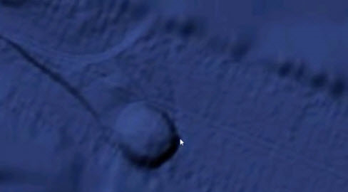
What is this object?(Image Source.)
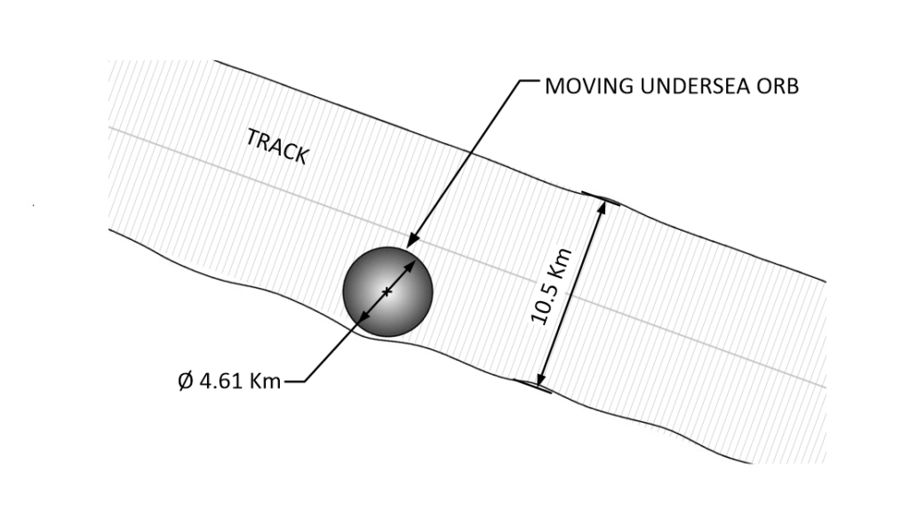
It is pretty big. At 4.61 Km.
To put this into perspective, imagine that an American football field is 100 yards long (roughly 100 meters). You could fit 46 football fields end to end inside this object. It is huge. In fact, it is the size of a small city. It is around 66.5 square kilometers in surface area. It is one half the size of Pittsburgh, Pennsylvania. (151.1 square kilometers.)
What we can learn from this orb is rather simple. It is associated with the linear tracks, but does not follow the tracks. It makes its own tracks, which seemingly appear to be of random movements. It is also smaller than the width of the linear tracks.
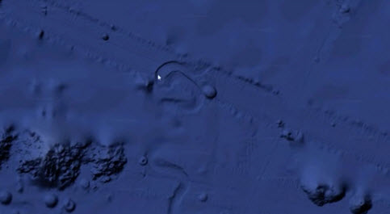
There is no question that it is moving about and leaving tracks.(Image Source.)
Abandoned Orb at the base of Lapulapu Ridge
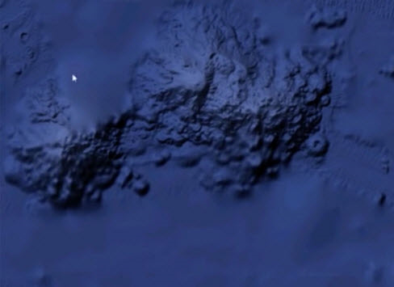
Another orb “parked” on one of the Lapulapu mining lines? This one looks like it is collapsed somehow. (Image Source.)
Close up of an abandoned orb that seems to be parked next to an undersea mountain. It looks like it has been there for a while. Notice that the top of the orb is open and suggests an interior with some type of complex layout. It is too bad that it is so deep, it would be really interesting to go and visit. I wonder what stories it could tell us.
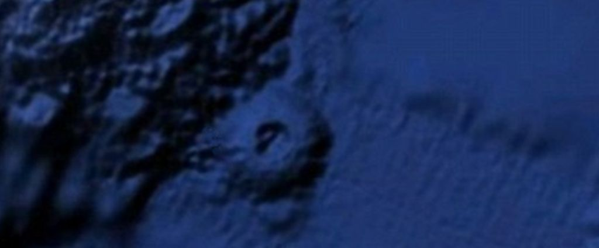
Uh oh. The Orb frustratingly disappears into an obscured area.
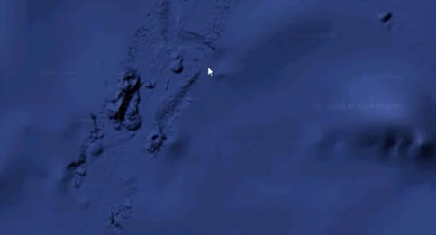
Curses! Foiled Again! (Image Source.)
Conclusions
There are features under the ocean that defy known geologic processes. They are suggestive of undersea mining by an enormous undersea orb. Attempts to describe this away as a natural process are laughable. I don’t know what it is, nor do I know why it is there.
The only thing that I know is that the reality that we think of, is just an illusion.
It is entirely possible that this observed structure is something piloted by an intelligence for purposes that have no bearing or relationship to humans at all. As such, it is offered to the reader as nothing more, nor nothing less, than an intelligently piloted object that apparently defies the limits of human engineering.
Take Aways
What can we learn from this;
- There are mysteries that exist under the ocean.
- Not everything can be explained away as normal geologic processes.
- There are huge mobile constructions that can move about under intense water pressure.
- They create paths that appear to be searching or looking for something.
Other Opinions
I received this comment off-line by an influencer.
I think those “machines tracks” are an artifact of the SONAR scan, it’s called Phase Shadowing in the RADAR world. Check out Google Earth ocean bottom off the east coast of the US, say between NYC and Bermuda, it’s all over the place. I’d bet money it’s just an artifact of the signal processing but I’m only 95% sure.
I think that this is a valid observation. However…
- It wouldn’t explain the roving orb phenomenon.
- It wouldn’t explain why the sonar doesn’t influence the orb.
- It wouldn’t explain the jockeying back and forth on the sides of the undersea cliffs.
- It wouldn’t explain how some right angles are crisp, while others have a radius.
- It wouldn’t explain how the tracks go under the Saipan islands and then collapse them into the sea.
- It wouldn’t explain how dust and debris can obscure the tracks in certain areas.
This type of searching for answers is an important part of our role in understanding the world around us. While I have mentioned numerous “objections” to this solution, my ignorance in the way the sonar scan works should be obvious.
That being said, in my mind, it could very well be very possible that these are somehow associated with a sonar scan. I just do not know.
RFH
How about a Request For Help? I tire of busybodies and statists who poke fun at the ideas and theories of others. They offer no constructive dialog. Rather they just make fun, ridicule, and then scurry under a rock.
I use this forum as a way to disseminate some of the things that I learned though my thirty years of involvement in MAJestic. However, I am forbidden to posit my knowledge directly. I cannot tell the interested, the “secrets of the universe”. The best that I can do is share my opinions about things that interest me, and flavor it indirectly with my forbidden understandings.
To help put this in perspective, put yourself in my shoes…
Imagine that you are working at a company with a brutal NDR. You cannot divulge anything about what you are involved in for any reason. Now, let’s suppose that for thirty years you were involved in training unicorns to dance with bigfoot. To help with your training, the Lock Ness Monster would gather “magical beans” that you would award the unicorns when they did a particularly impressive dance move; like the cha cha or a nice rendition of the samba. Now, there is no way that you can talk about unicorns, bigfoot, or the Lock Ness Monster. But, the NDR doesn’t cover “magic beans”. So in the best interests of society, you might want to posit your thoughts about growing “magic beans” and how they might be of interest to imaginary creatures. That is the situation that I find myself in.
So, if you, the reader, were so interested, I would welcome your thoughts on this matter. What do you think about the plausibility that the orb and the tracks are natural geologic events? What are your thoughts about the idea that the US Navy already studied the orb with the open top? What are your thoughts on the levels of technology that must be achieved to perform these kinds of operations? Please, you are welcome to contribute.
This is my callout, to you the reader, to assist all of us in solving these mysteries. After all, this is a far better use of the internet than for looking at Justin Bieber videos.
FAQ
Q: What is causing the lines or “tracks” under the sea?
A: I do not know. There are geologic processes that can create lines around stress faults, however these lines do not look like any that we know if. If they are part of a geologic process then it would be a new and interesting geologic process. One that deserves study and investigation. To me, as a layman, they appear to be tracks with nice linear debris trails. However, human technology has not advanced to the stage where we can mine at such deep depths. We just do not have that ability. Thus we have ourselves a mystery that perplexes us.
Q: What is the orb?
A: No one knows, of if they do know, they are keeping it secret. It is a large, no huge, structure that is roving about on the ocean floor. It seemingly follow or retraces the linear tracks made earlier, but instead of following the path already made, it just seemingly moves randomly.
Q: What can we learn about this odd event?
A: Someone or something thinks that the Lapulapu Ridge holds some valuable items or minerals. They have devoted time (obviously), and effort (certainly) to mine these elements. It is unlikely that they are human, because known human technology cannot reach the working environment that the objects operate in.
Q: Why isn’t someone investigating this?
A: What makes you think that no one is investigating this? Just because CNN, WaPo, Salon and the Huffington Puffington Post thinks that there is nothing here, doesn’t mean that is actually the case. From a technical point of view, the suggestion of technologies that would enable us to mine the ocean deeps, as well as to provide military advantage for naval submarines is reason alone to investigate this mystery. Remember, boys and girls, real investigations are never publicized. They are kept secret and the work is collected and accomplished in silence.
MAJestic Related Posts – Training
These are posts and articles that revolve around how I was recruited for MAJestic and my training. Also discussed is the nature of secret programs. I really do not know why the organization was kept so secret. It really wasn’t because of any kind of military concern, and the technologies were way too involved for any kind of information transfer. The only conclusion that I can come to is that we were obligated to maintain secrecy at the behalf of our extraterrestrial benefactors.


MAJestic Related Posts – Our Universe
These particular posts are concerned about the universe that we are all part of. Being entangled as I was, and involved in the crazy things that I was, I was given some insight. This insight wasn’t anything super special. Rather it offered me perception along with advantage. Here, I try to impart some of that knowledge through discussion.
Enjoy.


MAJestic Related Posts – World-Line Travel
These posts are related to “reality slides”. Other more common terms are “world-line travel”, or the MWI. What people fail to grasp is that when a person has the ability to slide into a different reality (pass into a different world-line), they are able to “touch” Heaven to some extent. Here are posts that cover this topic.


John Titor Related Posts
Another person, collectively known by the identity of “John Titor” claimed to utilize world-line (MWI egress) travel to collect artifacts from the past. He is an interesting subject to discuss. Here we have multiple posts in this regard.
They are;